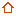
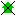
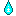

Refuges.info vous permet d'afficher sur une carte, des refuges, abris et autres points d'intérêt pour les randonneurs. Ils vous est alors possible de cliquer sur un point pour avoir des informations pratiques sur celui-ci.
Afficher la carte Afficher l'aide Accéder au site web completLégende de la carte :
-  Cabane non gardée
Une cabane non gardée est un abris dans lequel la possibilité de passer une nuit est envisageable, cependant rien n'y est assuré, aucune garantie de le trouver ouvert, dans des conditions décentes ne peut être fournie. Note : Les locaux (bergers par exemple) ont la priorité dans ces cabanes.
- Abris sommaire
Un abri somaire est une cabane non gardée jugée en trop mauvaise état pour y passer la nuit, elle peux servir en cas d'urgences (intempéries…)
- Cabane fermée
- Refuge gardé
Un refuge gardé vous assure une nuit dans un bâtiment de qualitée géré par du personnel. Vous pouvez en général y dormir et y manger, en échange d'un paiement. Il est conseiller d'appeler au préalable pour réserver.
- Refuge fermé
- Gîte
Un gîte d'étape fournit l'essentiel pour passer la nuit dans les conditions idéales. Vous aurez un service de qualité pour un prix généralement inférieur à une nuit en hôtel.
-  Gîte fermé
-  Point d'eau
Un point d'eau, ou une source, offre l'eau vitale au randonneur. Il est conseillé de traiter cette eau avec des pastilles adéquates (type micropur) car elle n'est pas forcement potable.
 Lac
Lac- Point de passage
Point de passage fréquent de randonneur souvent du fait du relief (par exemple les cols).
 Sommet
Sommet- Site remarquable
Menu Principal La Carte